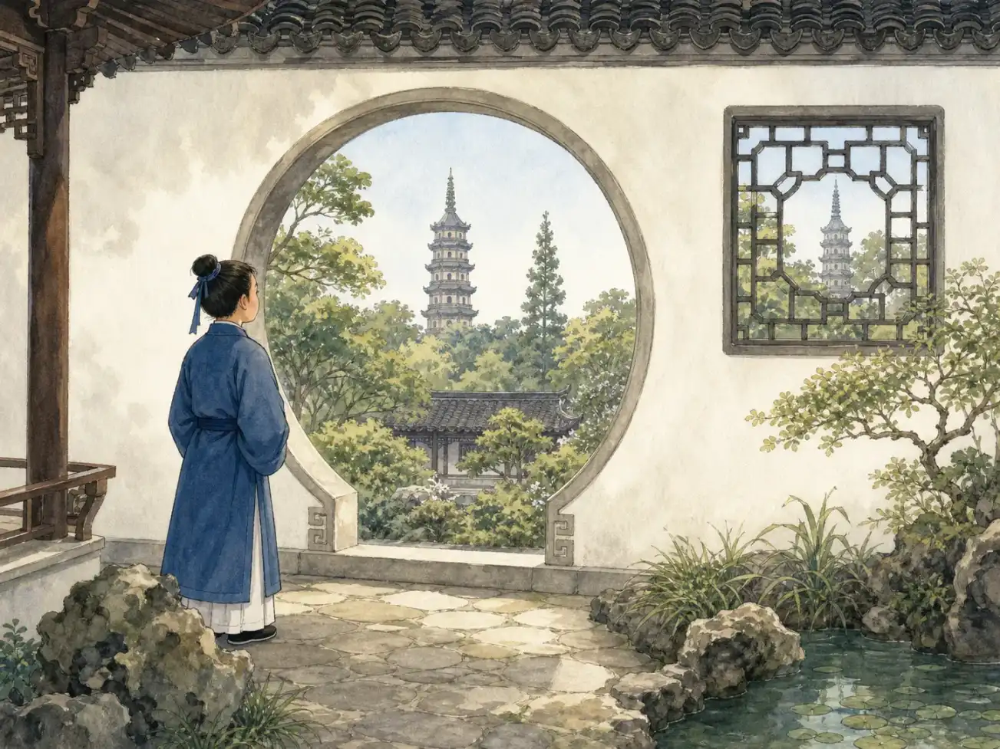
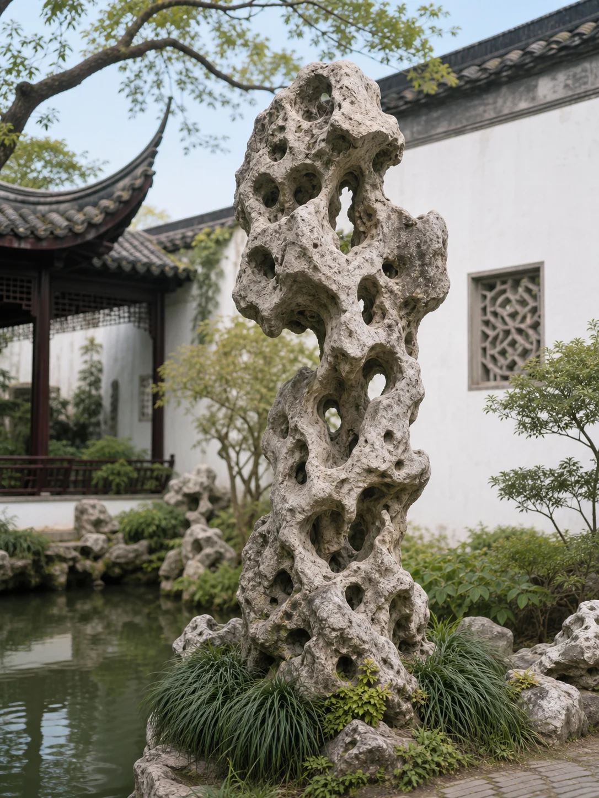

苏州园林：转个弯，又是一幅画
Suzhou Gardens: A New View Around Every Corner
Page 1
小花园怎么会越走越大？
How Can a Small Garden Feel Bigger?

Water, rocks, trees, and small buildings fill a limited space with many different views.
Sūzhōu · 江苏的城市，以园林、运河和传统工艺闻名。是中国东部的一座古城。城里有一些花园，面积并不大，却能让人走很久也不觉得无聊。你刚看见一片池塘，墙就把它藏住了；转过弯，一座小亭子又从树后露出来。
这些园林不是把所有漂亮东西都摆在眼前。它们故意让你一会儿看见，一会儿看不见。小路不直直地冲到终点，而是在石头、墙和花木之间绕来绕去。每次转身，眼前都像换了一幅画。
许多苏州园林原来是私人住宅的一部分。主人不能把真正的湖泊和高山搬进城里，于是请工匠用池水、石头、植物和建筑，在小地方做出一个可以走进去的自然世界。
Sūzhōu · 苏州 · A city in Jiangsu famous for gardens, canals, and traditional crafts. is an old city in eastern China. Some of its famous gardens are not very large, yet you can walk through them for a long time without getting bored. One moment you see a pond. Then a wall hides it. Turn a corner, and a small pavilion appears behind the trees.
These gardens do not place every pretty thing in front of you at once. They let you see something, hide it, and then reveal it again. Paths do not rush straight to the end. They wind between rocks, walls, flowers, and trees. Each turn can feel like a new picture.
Many Suzhou gardens were once part of private homes. Their owners could not move a real lake or mountain into the city. Instead, they asked skilled workers to use ponds, rocks, plants, and buildings to make a small world of nature that people could step inside.
Page 2
一扇窗怎样“借”来远处的塔？
How Can a Window “Borrow” a Distant Pagoda?

An opening works like a picture frame, showing one carefully chosen piece of the view.
想象你站在一扇圆门前。远处的塔正好落在圆框中间，旁边还有树枝和屋檐。塔明明在园外，却好像成了园里这幅画的一部分。
这种办法叫“借景”。当然，谁也没有真的把塔借走。造园的人只是仔细选择了你站的位置、门洞的方向和前面的树木。你往旁边走几步，远塔也许就被墙挡住了。
门、窗和墙在这里不只是把房间围起来。它们也像画框和窗帘，决定什么先出现，什么晚一点出现。花园没有变大，可你的眼睛被带到了很远的地方。
Imagine standing in front of a round doorway. A distant pagoda sits right in the middle of the circle, with tree branches and a roof nearby. The pagoda is outside the garden, but it seems to belong to the picture inside the frame.
The people who designed gardens called this “borrowing scenery.” Nobody truly borrowed the pagoda. They carefully chose where you would stand, which way the opening would face, and what trees would fill the front of the view. Take a few steps sideways, and the distant tower may disappear behind a wall.
Here, doors, windows, and walls do more than close off rooms. They also act like picture frames and curtains. They decide what you see first and what appears later. The garden has not grown, but your eyes have traveled far beyond its walls.
Page 3
小路为什么不肯走直线？
Why Won't the Path Go Straight?
如果花园的小路从大门直通后墙，你一眼就能看完，几分钟也就走完了。苏州园林里的路偏偏喜欢转弯。有时它穿过暗一点的走廊，有时跨过水面，有时从一扇形状特别的窗边经过。
弯路让路程变长，也让景色有先后。你可能先听见水声，过一会儿才看见池塘；先看见屋顶的一角，再走近整座亭子。花园像在慢慢讲故事，不肯把后面的一页提前翻给你看。
路面也会改变脚步。大石板让人走得稳，窄窄的石桥会让人放慢，曲折的小径会让人留意下一步。造园的人不只安排你看什么，也在安排你怎样走。
If a garden path ran straight from the front gate to the back wall, you could see almost everything at once and finish your walk in a few minutes. Paths in Suzhou gardens prefer to turn. One may pass through a dim hallway, cross over water, or slip beside a window with an unusual shape.
A winding path makes the walk longer and gives each view its own turn. You may hear water before you see the pond. You may spot one corner of a roof before the whole pavilion appears. The garden tells its story slowly. It does not show you the last page too soon.
The ground changes your steps too. Large stone slabs feel steady. A narrow bridge makes you slow down. A twisting path makes you watch where you place your feet. Garden makers planned not only what you would see, but also how you would move.
Page 4
石头也能变成小山
When Rocks Become Mountains

Lake Tai is a large lake near Suzhou. Unusual rocks linked with the lake were often used to build garden rockeries.
苏州附近有一个很大的湖，叫Tàihú · 位于江南的大型淡水湖，苏州和无锡都在湖边。。从那里运来的石灰岩被称为太湖石。有的太湖石外形弯曲，有的满身是洞。湖水和沙子经过很长时间的冲刷，慢慢改变了石头的样子。
造园的人不会把石头随便堆成一堆。他们要考虑哪一面朝外，哪里留一条小路，哪里做出一个可以穿过的石洞。石头也能挡住后面的景色，让人绕过去以后才看见新的地方。
小假山可以放在池塘边，大一些的假山里还可以有台阶、小路和石洞。人绕着它走、从洞里穿过，或者登上几级台阶，池塘和屋顶就会换一个角度。
Near Suzhou is a large lake called Tàihú · 太湖 · A large freshwater lake in Jiangnan, bordered by cities including Suzhou and Wuxi., or Lake Tai. Limestone brought from the area became known as Taihu rock. Some pieces twist and bend, while others are full of holes. Over a very long time, lake water and sand wore the stone into unusual shapes.
Garden makers did not simply dump the rocks into a pile. They chose which side should face the path, where to leave a passage, and where to make a stone opening that people could walk through. Rocks could also hide the view behind them, saving something new for the other side.
A small rockery might sit beside a pond. A larger one could contain steps, paths, and caves. Walk around it, pass through an opening, or climb a few steps, and the pond and rooftops come into view from a different angle.
Page 5
花园为什么每天都不一样？
Why Does the Garden Look Different Every Day?
花园里有许多活着的东西，所以它不会每天都一个样。春天花朵开放，夏天荷叶铺满水面，秋天树叶变色，冬天落叶以后，藏在后面的石头和屋顶又露了出来。
树木会越长越大，雨水会冲刷墙面，木头也会慢慢变旧。人们要修补建筑、清理池塘，也要照顾不断生长的花草树木。修得太多，老花园会失去原来的样子；什么都不做，它也会慢慢坏掉。
今天，许多从前的私人园林已经向公众开放。游客可以走过弯弯的小路，跨过小桥，在池塘边停一停。同一条短短的路，在春雨里和冬日的阳光下，会是两种不同的景色。
A garden contains many living things, so it never looks exactly the same from day to day. Flowers open in spring. Lotus leaves spread across the water in summer. Trees change color in fall. After the leaves drop in winter, rocks and rooftops that were hidden come into view again.
Trees keep growing, rain wears at the walls, and wood slowly ages. People must repair buildings, clean ponds, and care for plants. Change too much, and an old garden loses its familiar look. Do nothing, and it slowly falls apart.
Today, many gardens that were once private are open to the public. Visitors can follow winding paths, cross small bridges, and pause beside ponds. The same short path can look very different in spring rain and winter sunshine.